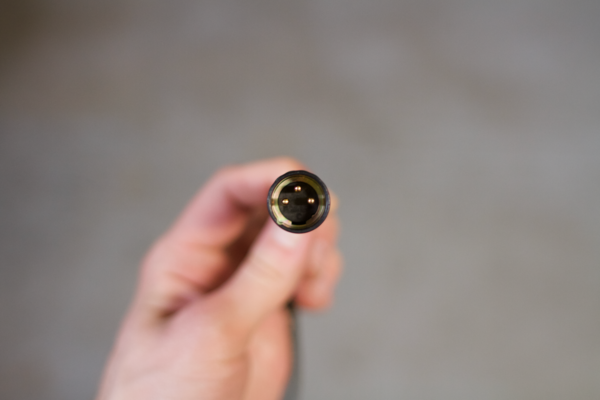

Fjord Audio
About

I started Fjord Audio in August 2016 as an outlet for my interests in design and technology. I wanted to bring the same attention to detail and creativity that I admire in companies like Best Made Company, Postlight, and Field Notes to the recording equipment industry.
I was inspired to make our first product, Fjord XLR, by a cotton-covered extension cord made by Conway Electric. I had been looking for a simple idea with which to start the company, and cables seemed like a good place to start. They're made out of only a few parts; they're often overlooked and made cheaply; and they're essential to every recording studio and music person.
I asked Conway Electric's founder, Kevin Faul, via Instagram (!) if it would be possible to wrap microphone cables in the same patterned cotton fabric that they use on their extension cords. He replied, "How many feet do you need?" I filed the forms to start Fjord Audio the next day.
After more than a year of making prototypes (with help from Alchemy Audio), finding the right parts, and deliberating about details like the diameter of the cable and the texture of the fabric, Fjord XLR launched with a successful Kickstarter campaign in October 2017. The process was educational and gratifying. I got to work on my skills in graphic design, photography, and videography while making all of the promotional materials for the campaign. And after spending so much time wondering about the worth of Fjord XLR, it was a relief to see that other people wanted to use the cables. (They were also entertained by my grandpa, Peter Miller, who plays Fjord Audio's "CEO" in the campaign launch video.)
Since then, Fjord Audio has sold hundreds of microphone cables and I'm preparing to add instrument cables — and other products — to our lineup.